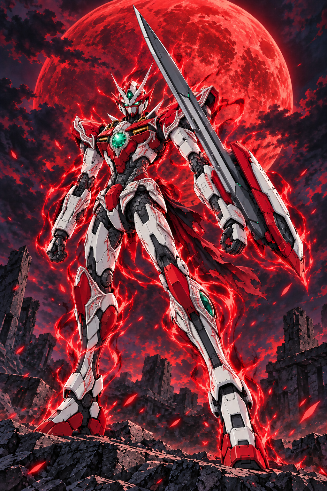

BLOOD ARTS
핏빛의 악장
일반기
혈섬 돌진
전장 준비 중무음 프리뷰
전용 전장과 스프라이트를 불러오고 있습니다.
ANIMATION ARCHIVE
동작과 혈기
전투 동작 · 스킬 스프라이트 원본 보기
SSS 리미티드 · V-975 · 승인된 전투 연출. 기본 전투력 2,300,000, 제로와 동급. 현재 일반 획득 불가.
적월·흑염 대기 영상새 특수기 2종 영상 저장기존 5종 영상제작 기록적월·흑염 프롬프트새 특수기·혈갑 프롬프트승인 원본